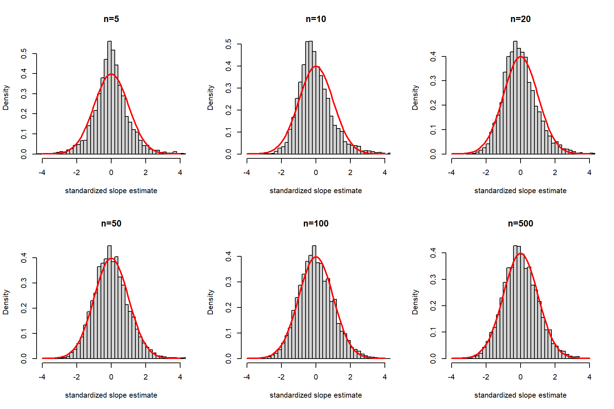

Why? This is an application of the Weak Law of Large Numbers.1
Which holds, so long as the terms have a finite variance.
\(Var(x_i)<\infty\)
\(Var(u_i)<\infty\)
ImportantWeak Law of Large Numbers
The WLLN states that the sample mean converges in probability to the expected value of a random variable under iid sampling:
\[
\bar{x}_n = n^{-1}\sum_{i=1}^n x_i \rightarrow_p E[x_i]
\] as \(n\rightarrow \infty\). We typically assume that the variable has a finite variance; though, it is not strictly necessary.
for any positive value \(\varepsilon\). There is also where the phrase “probability limit” comes from. If you fix \(\varepsilon\), then there is a sufficiently large \(n\) such that the probability that the estimator is \(\varepsilon\) away from the true value is close to 0.
We say then that \(\hat{\beta}_1\) converges in probability to \(\beta_1\): \(\hat{\beta}_1 \rightarrow_p \beta_1\).
\(E[u]=0\) and \(E[ux_{j}]=0\) for \(j=1,\dots,k\).
OLS is consistent.
Important
Consistent is not the same as unbiased. Unbiasedness is a property for an exact \(n\), while constistency concerns the probability limit of the estimator as \(n\rightarrow \infty\). Estimators can be consistent, but biased. In some instances, estimators can be unbiased but not consistent because their variances do not shrink as \(n\) increases.
MLR 4 vs MLR 4a
What is difference? Under MLR 4, the population regression function is correctly specified
This formula for limiting variance has an \(n^{-1}\) in the denominator that doesn’t appear in the exact sample formula for the conditional variance. Wooldridge (2025, 174) includes the formula:
The distribution in the denominator arises from the variance estimator, which has a \(\chi^2_{n-k-1}/(n-k-1)\) (conditional) distribution (under MLR 1-6).
As \(n\rightarrow \infty\),
\[
\chi^2_{n-k-1}/(n-k-1)\rightarrow 1
\]
And in neither cases does the numerator depend on \(n\). This explains the results above.
Hypothesis tests
Having said that, it is equally accurate to say
\[
t\text{-stat} \overset{a}{\sim}t_{n-k-1}
\]
and
\[
F\text{-stat} \overset{a}{\sim}F_{q,n-k-1}
\]
without MLR 6.
Likewise for Chow test.
Demonstration
Let’s simulate a model:
\[
y_i = 2 + 0.5x_i + u_i
\]
where,
\[
u_i+1|x_i \sim \text{Exp} (1)
\]
\(\Rightarrow E[u_i|x_i = 0]\)
\(\Rightarrow Var(u_i|x_i) = 1\)
BUT the error has a skewness factor of 2.
Simulation
Here we plot the standardized coefficients.

Asymptotic Tests
The Lagrange Multiplier (LM) statistic
Note
We are covering this because it is relevant to tests for Heteroskedasticity (Ch. 8.3).
The \(LM\)-stat can be used under MLR 1-5 (therefore MLR 6 is not needed).
\(\hat{r}_{ij}\) is the residual from a regression of \(x_j\) on all other regressors as well as a constant.
\(\sum_{i=1}^n\hat{r}_{ij}=0\): the mean of the residual is zero
\((\tilde x_{ij}-\bar{\tilde x}_j)^2\) is replaced with \(\hat{r}_{ij}^2\)
HC’s
Note: this is not the only heteroskedastic-consistent (HC) SE estimator.6
HC0: Original White (1980) formula that uses the unadjusted squares of the residuals. Formula from Wooldridge (2025).
HC1: Huber-White sandwich formula. Correct’s HC0 for degrees of freedom: HC0 \(\times n/(n-k-1)\). Stata default.
HC2: Adjusts residuals by a regressor-specific leverage term. Better for small samples and corresponds to Neyman variance estimator (in simple linear case with dummy regressor).
HC3: The `jackknife’ estimator. Different adjustment for leverage term. Better small-sample bias adjustment and recommended for small sample settings: \(n<250\).
TipRobust SEs
Heteroskedasticity is not the only concern related to SEs. As you read applied work you will see corrections for clustering, auto-correlation, spatial correlations, etc. And when you look into the options, you will read about approaches like bootstrap and jackknife SE estimation. For example, MacKinnon and White’s (1985) HC3 correction is the algebraic equivalent of a jackknife (“leave-one-out”) estimator.
Consequences
Does heteroskedasticity make OLS biased?
No! (Un)biasedness depends on MLR 1-4
the estimation of heteroskedastic-robust SEs has no bearing on the estimated OLS coefficients.
heteroskedasticity may be the result of omitted variables and/or model mis-specification.
Does it make it less efficient?
Yes. Under heteroskedasticity, OLS is no longer BLUE
See Weighted Least Squares Estimation (Ch. 8.4, not examinable)
\(t\) tests
exact distribution of \(t\)-stats is not \(t\) distributed
the asymptotic distributions remain normal
can use \(t\) distributions as an approximation for larger \(n\) (slightly more conservative)
\(F\) tests
there is a heteroskedastic-robust \(F\)-stat (also referred to Wald Statistic)
Chow test is not valid, but can use dummy variable interaction method with robust \(F\) test.
* Use the vce() option with robustreg lnwage edu exp expsq female unioncov, vce(robust)* You can also just say,* reg lnwage edu exp expsq female unioncov, robust
* Use the vce() option with robustquireg lnwage edu exp expsq female unioncov* F-statisticestathettest, rhs fstat* The defaulttest (i.e. without rhs) tests formore general forms of heteroskedasticity.
Breusch–Pagan/Cook–Weisberg test for heteroskedasticity
Assumption: i.i.d. error terms
Variables: All independent variables
H0: Constant variance
F(5, 8949) = 59.01
Prob > F = 0.0000
Breusch-Pagan test (\(LM\)-stat)
* LM-statisticestathettest, rhs
Breusch–Pagan/Cook–Weisberg test for heteroskedasticity
Assumption: Normal error terms
Variables: All independent variables
H0: Constant variance
chi2(5) = 573.26
Prob > chi2 = 0.0000
In R, the relevant tests are a part of the lmtest package.
Breusch-Pagan test (\(F\)-stat) - can’t find matching R version.
# 1. Extract squared residuals and run auxiliary regressionaux_model <-lm(I(residuals(model)^2) ~ edu + exp + expsq + female + unioncov, data=model.frame(model))# 2. View F-statistic, degrees of freedom, and p-valuesummary(aux_model)
Call:
lm(formula = I(residuals(model)^2) ~ edu + exp + expsq + female +
unioncov, data = model.frame(model))
Residuals:
Min 1Q Median 3Q Max
-0.5714 -0.2351 -0.1395 0.0176 5.4707
Coefficients:
Estimate Std. Error t value Pr(>|t|)
(Intercept) -3.794e-01 1.022e-01 -3.711 0.000208 ***
edu 3.171e-02 2.125e-03 14.921 < 2e-16 ***
exp 5.373e-03 1.455e-03 3.692 0.000224 ***
expsq -3.406e-05 2.857e-05 -1.192 0.233250
female -6.764e-02 1.140e-02 -5.933 3.08e-09 ***
unioncov 6.575e-02 4.848e-02 1.356 0.175062
---
Signif. codes: 0 '***' 0.001 '**' 0.01 '*' 0.05 '.' 0.1 ' ' 1
Residual standard error: 0.5338 on 8949 degrees of freedom
Multiple R-squared: 0.03192, Adjusted R-squared: 0.03138
F-statistic: 59.01 on 5 and 8949 DF, p-value: < 2.2e-16
Breusch-Pagan test (\(LM\)-stat)
# Using lmtest packagebptest(model, studentize =FALSE)
Breusch-Pagan test
data: model
BP = 573.26, df = 5, p-value < 2.2e-16
# Using olsrr package#library(olsrr) # Not available in AppsAnywhere#ols_test_breusch_pagan(model, rhs=TRUE)# Using skedastic package#library(skedastic) # Not available in AppsAnywhere#breusch_pagan(model, koenker = FALSE)
White test (\(LM\)-stat)
# LM-statistic: e.g. library(skedastic) # Not available in AppsAnywherewhite(model, interactions =TRUE)
# A tibble: 1 × 5
statistic p.value parameter method alternative
<dbl> <dbl> <dbl> <chr> <chr>
1 403. 4.97e-73 20 White's Test greater
References
Bibliography
Wooldridge, Jeffrey M. 2025. “Introductory Econometrics: A Modern Approach.”
Footnotes
It also makes use of Slutzky’s theorem which states that if \(X_n\rightarrow_p X\) and \(Y_n\rightarrow_p Y\), then \(X_n/Y_n\rightarrow_p X/Y\); so long as \(Y\neq 0\).↩︎
Here I use the label MLR 4a (‘a’ for alternative). Wooldridge uses 4’, which can get lost in notation. Both are acceptable.↩︎
We say OLS is \(\sqrt{n}\)-consistent (or “root-\(n\)” consistent)↩︎
Recall from Lecture 3, unbiasedness requires MLR 4.↩︎
Wooldridge (2025, 278) states “variance of the error depends upon the particular value of \(x_i\)”. This is one form of heteroskedasticity; e.g. \(\sigma^2_i = \sigma^2x_i\). But heteroskedasticity can be more general than this.↩︎
For a detailed discussion, you can read this Stata blog from 2022.↩︎
The White test allows for higher order polynomials of \(x\)’s and interactions, which reflects the fact that we do not the know the exact form of the CEF.↩︎
The name Breusch Pragan test is usually reserved for the LM test equivalent where the test-statistic is \(LM = n\times\mathbf{R}^2_{\hat{u}^2}\).↩︎